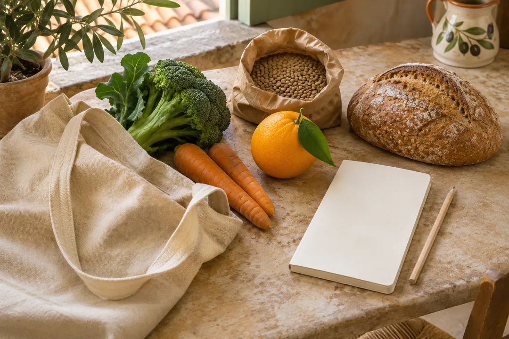

Menu mediterraneo e lista della spesa
Organizza sette giorni partendo da 28 ricette. Scegli le porzioni, indica ciò che hai in casa e guarda quanto acquistare.

Componi il menu
Scegli una ricetta per ogni pasto e cambia le porzioni dove serve. Per un pasto fuori casa lascia il campo vuoto. Completa il menu con la frutta, i contorni e gli altri alimenti che mangi abitualmente. Fai le tue aggiunte.
Varietà a pranzo e a cena
Come leggere gli esempi della settimana
Gli esempi alternano legumi, pesce, uova, carne bianca e ricotta. Il conteggio indica quante volte compare il gruppo principale del piatto. Le porzioni e gli altri alimenti della giornata dipendono dalle tue esigenze.
Completa gli esempi con le porzioni di frutta, verdura e altri alimenti che usi nella giornata. Se segui un piano per diabete o altre condizioni, usa le quantità concordate con chi ti segue. Dieta, diabete e cuore
Aggiungi frutta, contorni e altri alimenti
Scegli un alimento e indica i grammi totali per la settimana. Per esempio, 150 g da mangiare tre volte fanno 450 g da aggiungere.
Lista della spesa
La lista si aggiorna quando cambi il menu. Segna quello che hai già o riduci la quantità da comprare.
I grammi si riferiscono alla parte da usare. Considera bucce, scarti e peso sgocciolato quando scegli la confezione.
Pesi crudi, cotti e arrotondamenti
La lista converte dove serve il peso cotto in un peso d’acquisto stimato, poi unisce le righe dello stesso ingrediente. Pesa gli ingredienti come indicato nelle ricette. Le stime possono cambiare con l’ammollo, la cottura e la marca. Le uova sono arrotondate al pezzo usando 50 g senza guscio per uovo medio.
Per ceci, fagioli, lenticchie, carote e patate usiamo le rese della tabella C del CREA. Per il riso integrale, 1 g secco corrisponde indicativamente a 3 g cotti, stima ricavata dal rapporto tra i carboidrati nelle due tabelle.
CREA · Rese di cottura · Riso integrale secco · Riso integrale cotto
Il menu e la dispensa si salvano sul dispositivo. Apri l’app Per Me online una prima volta per poter tornare al menu e alle ricette salvate anche senza rete.
Organizza la spesa della settimana
Scegli due piatti che usano lo stesso ortaggio. Compra la quantità necessaria per entrambi e cucina secondo i tuoi tempi. Per i legumi in scatola, confronta il prezzo sul peso sgocciolato. Per frutta e verdura confronta prezzo e quantità che riuscirai a usare.
Raffredda in fretta le porzioni cotte che vuoi conservare e mettile in frigorifero o congelale in contenitori puliti. Tieni separati alimenti crudi e cotti. OMS · Manuale per alimenti più sicuri (in inglese)
Le scelte di base seguono il modello mediterraneo del CREA, con varietà di ortaggi e cereali e più spazio ai legumi. Le stime per piatto riportano i carboidrati disponibili. CREA · Linee guida per una sana alimentazione